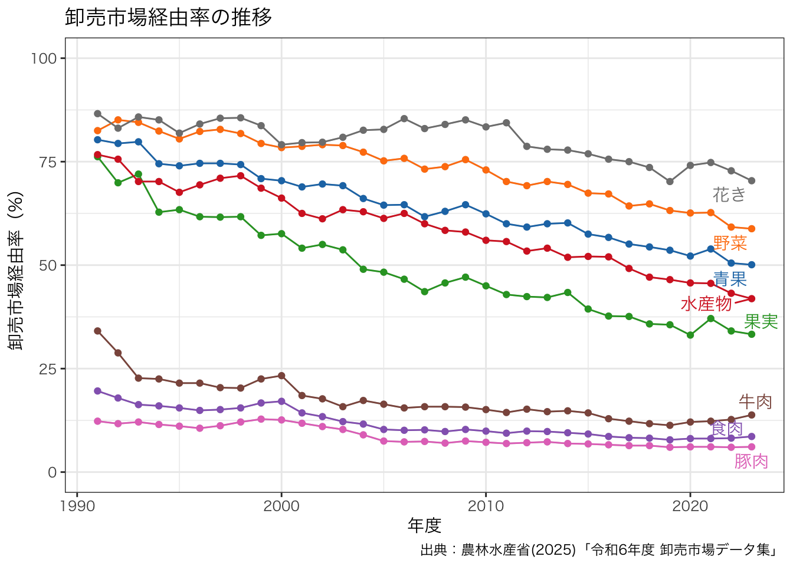

library(readr)
library(tidyr)
library(dplyr)
library(ggplot2)
library(gghighlight)
library(ggsci)
library(gt)
figdir <- "../fig"
dir.create(figdir, showWarnings = FALSE)
d <- read_csv("../data/卸売市場経由率の推移.csv")
d_long <- d |>
pivot_longer(
cols = -年度,
names_to = "name",
values_to = "value"
) |>
mutate(name = factor(name, levels = unique(name)))
g <- ggplot(
data = d_long,
aes(x = 年度, y = value, colour = name)
) +
geom_line() +
geom_point() +
scale_y_continuous(limits = c(0, 100)) +
scale_color_d3() +
labs(
title = "卸売市場経由率の推移",
x = "年度",
y = "卸売市場経由率（%）",
caption = "出典：農林水産省(2025)「令和6年度 卸売市場データ集」") +
theme_bw() +
theme(
legend.position = "none",
text = element_text(family = "Hiragino Sans")
) +
gghighlight(
min(value) > 0,
line_label_type = "ggrepel_text",
label_params = list(family = "Hiragino Sans")
)
ggsave(
"wholesale_market_trends.pdf",
plot = g,
device = cairo_pdf,
path = figdir,
width = 10,
height = 5
)
g
gt(d)| 年度 | 青果 | 野菜 | 果実 | 水産物 | 食肉 | 牛肉 | 豚肉 | 花き |
|---|---|---|---|---|---|---|---|---|
| 1991 | 80.3 | 82.5 | 76.2 | 76.7 | 19.6 | 34.1 | 12.3 | 86.6 |
| 1992 | 79.4 | 85.1 | 69.9 | 75.6 | 17.9 | 28.8 | 11.7 | 83.1 |
| 1993 | 79.8 | 84.5 | 72.0 | 70.2 | 16.3 | 22.7 | 12.1 | 85.8 |
| 1994 | 74.5 | 82.4 | 62.8 | 70.2 | 16.0 | 22.5 | 11.5 | 85.1 |
| 1995 | 74.0 | 80.5 | 63.4 | 67.6 | 15.5 | 21.5 | 11.1 | 81.9 |
| 1996 | 74.6 | 82.3 | 61.7 | 69.4 | 14.9 | 21.5 | 10.6 | 84.1 |
| 1997 | 74.6 | 82.8 | 61.6 | 71.0 | 15.1 | 20.4 | 11.2 | 85.5 |
| 1998 | 74.3 | 81.8 | 61.7 | 71.6 | 15.5 | 20.3 | 12.1 | 85.6 |
| 1999 | 70.9 | 79.4 | 57.2 | 68.6 | 16.7 | 22.5 | 12.8 | 83.7 |
| 2000 | 70.4 | 78.4 | 57.6 | 66.2 | 17.1 | 23.3 | 12.6 | 79.1 |
| 2001 | 68.9 | 78.7 | 54.1 | 62.5 | 14.3 | 18.5 | 11.8 | 79.6 |
| 2002 | 69.6 | 79.1 | 55.0 | 61.2 | 13.4 | 17.7 | 11.0 | 79.7 |
| 2003 | 69.2 | 78.9 | 53.7 | 63.4 | 12.2 | 15.8 | 10.3 | 80.9 |
| 2004 | 66.1 | 77.3 | 49.0 | 62.9 | 11.6 | 17.3 | 9.0 | 82.6 |
| 2005 | 64.5 | 75.2 | 48.3 | 61.3 | 10.3 | 16.4 | 7.5 | 82.8 |
| 2006 | 64.6 | 75.8 | 46.6 | 62.5 | 10.1 | 15.5 | 7.3 | 85.4 |
| 2007 | 61.7 | 73.2 | 43.6 | 60.0 | 10.2 | 15.8 | 7.4 | 83.0 |
| 2008 | 63.0 | 73.8 | 45.7 | 58.4 | 9.8 | 15.8 | 7.0 | 84.0 |
| 2009 | 64.6 | 75.5 | 47.1 | 58.0 | 10.3 | 15.7 | 7.5 | 85.1 |
| 2010 | 62.4 | 73.0 | 45.0 | 56.0 | 9.9 | 15.1 | 7.2 | 83.4 |
| 2011 | 60.0 | 70.2 | 42.9 | 55.7 | 9.4 | 14.4 | 6.9 | 84.4 |
| 2012 | 59.2 | 69.2 | 42.4 | 53.4 | 9.9 | 15.2 | 7.1 | 78.7 |
| 2013 | 60.0 | 70.2 | 42.2 | 54.1 | 9.8 | 14.6 | 7.3 | 78.0 |
| 2014 | 60.2 | 69.5 | 43.4 | 51.9 | 9.5 | 14.8 | 6.9 | 77.8 |
| 2015 | 57.5 | 67.4 | 39.4 | 52.1 | 9.2 | 14.3 | 6.8 | 76.9 |
| 2016 | 56.7 | 67.2 | 37.7 | 52.0 | 8.6 | 12.9 | 6.6 | 75.6 |
| 2017 | 55.1 | 64.3 | 37.6 | 49.2 | 8.3 | 12.3 | 6.4 | 75.0 |
| 2018 | 54.4 | 64.8 | 35.8 | 47.1 | 8.2 | 11.7 | 6.4 | 73.6 |
| 2019 | 53.6 | 63.2 | 35.6 | 46.5 | 7.8 | 11.3 | 6.0 | 70.2 |
| 2020 | 52.2 | 62.6 | 33.1 | 45.7 | 8.1 | 12.1 | 6.1 | 74.1 |
| 2021 | 53.9 | 62.7 | 37.1 | 45.6 | 8.1 | 12.3 | 6.1 | 74.8 |
| 2022 | 50.5 | 59.2 | 34.1 | 43.2 | 8.2 | 12.7 | 6.0 | 72.8 |
| 2023 | 50.1 | 58.8 | 33.3 | 41.9 | 8.6 | 13.8 | 6.1 | 70.4 |